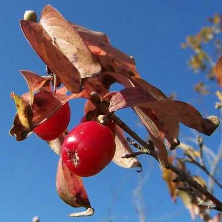

Un petit herbier virtuel de botanistes amateurs
parfois étonnés de découvrir qu'une épithète spécifique puisse défrayer la chronique en 2024, à l'exemple de caffra ! |
 La Paix est Une Fleur La Paix est Une Fleur |
Un herbier imaginé par
Claude Richard
pour s'initier à la Botanique dans l'Yonne
quelle que soit la saison.
PrintempsÉtéAutomneHiver |
L'Yonne où se trouvaient les terres du
premier inventaire floristique français. |
PRINTEMPS |
Au début du mois de juin
des fleurs discrètes, petites
et sans odeurs. |
Herbe de Sainte Barbe, barbarée commune
Pont-sur-Yonne, 30 avril 2024 |
ÉTÉ et fin d'été |
Au mois de juillet, les bulbilles de cet
Allium oleraceum attirent l'attention
avant ses fleurs campanulées. |
Daucus carota
Carotte sauvage, carotte commune.
Givry, 31 août 2024 © Claire Martin-Lucy |
Colchicum autumnale
Safran des prés, tue-chien
Thory, 16-IX-2024 © Claire Martin-Lucy |
AUTOMNE |
Spiranthes spiralis, spiranthe d'automne
St-Sauveur-en-Puisaye, 3 septembre 2010 © Jean Ygnard |

Cornus mas, une courgelle ou cornouille
Mailly-le-Château, septembre 2009 |
Helminthotheca echioides
Courbevoie (Hautes-de-Seine), 31-X-2022 |
Euonymus europaeus et ses capsules
Un danger pour les enfants ! |
HIVER |
Quand les orchidées sauvages
ne montrent que leurs feuilles... |
15 février 2024 © Claire Martin-Lucy |
... ou que les graminées sont givrées dans le hameau de Méluzien, nous permettant de constater que la vapeur d'eau condensée directement en givre est bien plus lègère que l'eau des gouttes de pluie ou de rosée.
|
Photo © Claire Martin-Lucy
Méluzien, 15 janvier 2024
|
Photo © Claire Martin-Lucy
Entre Sermizelles et Voutenay, 18-XII-2023 |
| C'est désormais ailleurs également, aussi bien dans l'espace (car dans une région tempérée de nombreuses familles botaniques ne sont pas représentées) que dans le temps, que cet herbier virtuel vous offre ses découvertes, pas toutes cependant, pleines de curiositas, ce désir de connaître quand bien même on ne peut pas tout savoir ni comprendre ce qui perdure en 2024. |